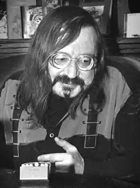
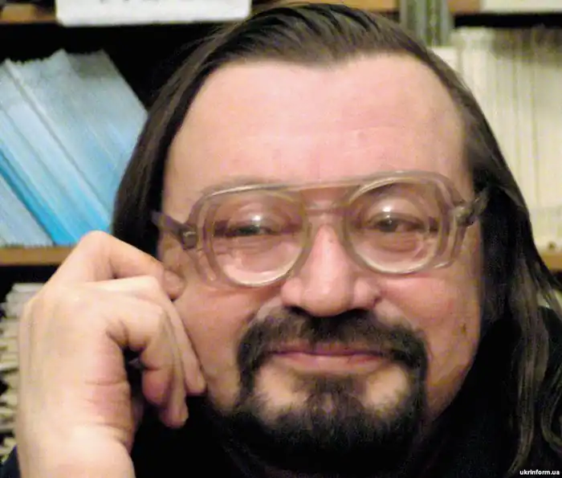

Ігоря Римарука вважають одним із найбільших українських поетів останніх років.
Він був одним із небагатьох українських поетів, про якого можна було сказати "поет від Бога". Але так само можна сказати, що вся його творчість була своєрідною дорогою до Бога, дорогою складною й подекуди просто нестерпною. Улюблені Божі сини завжди мають непрості взаємини з Отцем. Поезія для Римарука була постійним "витіканням душі", яку треба було віддати без залишку — це був його життєвий борг.
Його вірші мали в собі щось від молитов, хоч у визначеному ще в 1980-ті роки поділі української поезії на "сповідальників" і "метафористів" його найчастіше залічували до других. Однак, за всієї густоти й насиченості Ігоревої поезії, вона була максимально доступною та прозорою, як сповідь. Важко знайти більш християнського поета в сучасній українській поезії. Кожен поет — носій бодай маленького шматочка істини. А в Римарука ця істина була особливо гіркою та болісною. Народився 4 липня 1958 року в селі М'якоти Ізяславського району в сім'ї вчителів. В 1962 році батьки переїхали в село Западинці. Тут він навчався в школі і закінчив її у 1974 році із золотою медаллю. З червоним дипломом завершує і факультет журналістики Київського університету ім. Т.Г. Шевченка. В 1978 році починає друкувати свої твори в журналах "Дніпро", "Жовтень", в "Літературній Україні". Після закінчення університету працює в редакції газети "Вісті з України", пізніше — редактор видавництва "Молодь", зав. відділом поезії видавництва "Дніпро". В 1984 році виходить перша збірка поета "Висока вода". Він стає членом Спілки письменників України. За другу збірку "Упродовж снігопаду", що вийшла у 1988 році, стає лауреатом комсомольської премії ім. О. Бойченка. В 1991 році за збірку "Нічні голоси" нагороджений премією ім. В. Булаєнка. За збірку "Діва обида" в 2002 році нагороджений Національною Шевченківською премією. Головний редактор журналу "Сучасність" Жив і працював в Києві. Загинув 3 жовтня 2008 року у м. Львові.